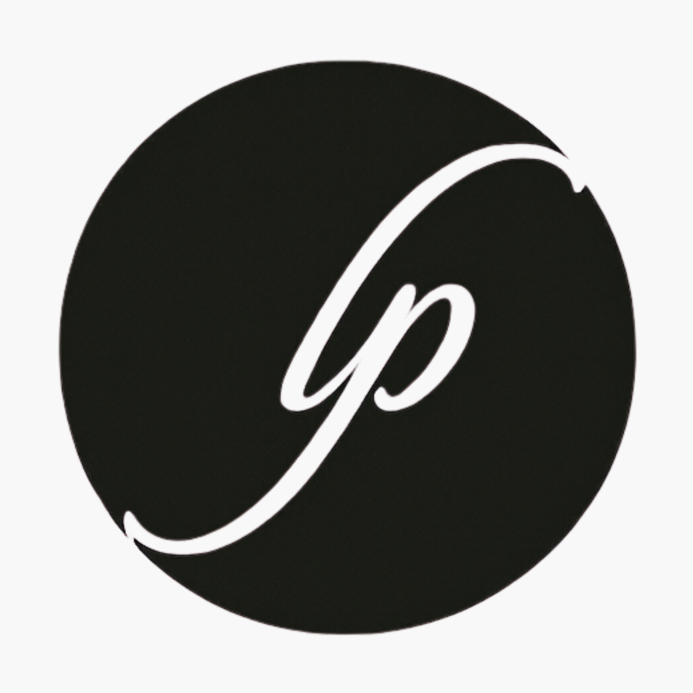

Hi, I'm Lara Parisi
Welcome to my portfolio.

Welcome to my portfolio.

Creativity has always been a part of who I am.
I started dancing at the age of four, and I’ve never stopped since. Movement, expression, and art have become a constant thread throughout my life. Over time, dance has become a fundamental part of who I am, shaping me through discipline, consistency, and passion. It has taught me dedication, perseverance, and the power of expressing myself beyond words.
While dance has been my first language of expression, I gradually felt the need to explore new ways to channel my creativity and structure it within a more strategic and professional context.
For the past three years, I’ve been working as a Project Manager and Account in a company just
outside Milan.
This role has allowed me to develop an organized and strategic mindset, while also collaborating
daily with
development and design teams.
It was precisely this experience that sparked my desire to dive deeper into the digital world and
web-based
creativity, an area where I can combine aesthetic sensibility with a strong project vision.
Outside of work, I love life’s simple pleasures: the sea, the sun, music, and traveling.
My favorite dish? Well, pasta, in all its shapes and forms.